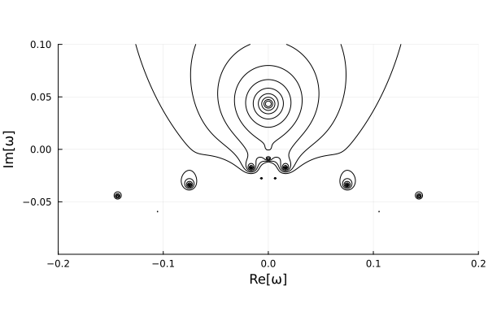

Quickstart
To reproduce the Plummer radial orbit instability calculation, see the example script in examples/PlummerE/runExamplePlummer.jl. Download the file by running:
wget https://github.com/JuliaStellarDynamics/LinearResponse.jl/blob/main/examples/PlummerE/runExamplePlummer.jlThis script will compute the location of the unstable radial orbit instability mode, using a simplified version of the calculation from Petersen et al. (2024) (n1max=1 instead of n1max=10, which results in a factor of 10 speedup). The outputs will all be cached (appearing as several files with the .h5 extension in the folder where the script is run), so re-running the example is inexpensive. This script will take approximately one minute to run.
Run the first example code with the following command:
$ julia path/to/runExamplePlummer.jlThis example will first install some required libraries (Plots). These installations might take a few minutes when first called.
The resulting plot will be created with the name ROIdeterminant.png.

In this image and test, we are highlighting two key results:
Measurement of an unstable mode, which is the pole located at $\omega=0.0+0.043i$. This mode location is verified against $N$-body simulations in Petersen et al. (2024).
False poles in the lower half-plane. All poles in the lower half-plane for this model are false poles owing to approximation of the function for linear response. We include them in this example as a caution against interpreting poles without validating via convergence tests.
An extension of this script, where the growth rate is computed for a range of radial anisotropy parameters, is Figure 1 in Petersen et al. (2024).
Other examples
The examples directory also includes several other basic calculations for the Isochrone, Plummer, and Zang disc models. For example, to (very nearly) reproduce the Isochrone damped dipole mode calculation from Fouvry & Prunet (2022), see the example driver script in examples/IsochroneE/runlinearresponseIsochroneISO.jl. Note that this mode is not converged: adjusting parameters (in particular n1max) will result in different pole locations. The example examples/IsochroneA/runlinearresponseIsochroneISO.jl is precisely the calculation performed by Fouvry & Prunet (2022) – that is, with the analytic isochrone relations. This example will take substantially more computational effort, and can take up to twenty minutes to complete.
Interactive notebook
If you prefer interactive Jupyter notebooks, you will need to install IJulia following these instructions.
The interactive introduction example is then given in examples/PlummerE/runExamplePlummer.ipynb.